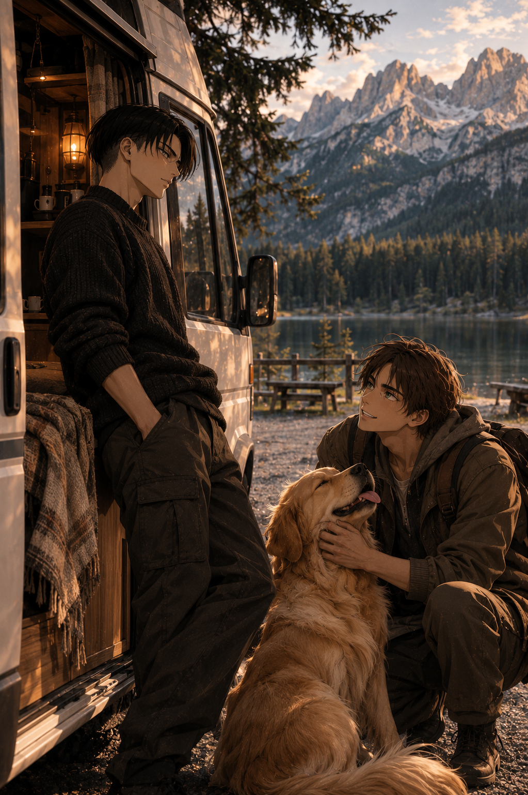

Miles to Go

The engine finally fell silent.
Levi remained behind the wheel for a moment, his hands resting loosely against it as he stared through the windshield. The road had been longer than anticipated, and the last two hours had done absolutely nothing to improve his mood. He exhaled through his nose, turned the key, and let his head fall back against the seat.
"Fucking hell."
His lower back had been complaining for the better part of the afternoon. He shifted in his seat, attempting to relieve the pressure, only to be rewarded with another unpleasant ache. Wonderful.
He pushed the door open and stepped outside, planting both feet firmly on the ground before straightening up. His arms rose above his head, fingers interlacing as he stretched until a faint crack sounded somewhere between his shoulders. A grimace crossed his face. He bent forward, rolled his neck, and pressed a hand against the small of his back.
"I'm getting too old for this shit."
The air, at least, was worth the trouble.
Cool and pleasantly fresh, it carried the faint scent of damp earth and pine. Beyond the small parking area, the landscape opened into a quiet stretch of wilderness, with trees lining the distant shore and mountains rising behind them.
Levi stood there for a while, allowing the breeze to brush against his face. No traffic. No impatient drivers. Just the wind moving through the trees, and the occasional rustling of leaves.
He glanced back at his vehicle, its familiar silhouette catching the last of the afternoon light.
Home, for however long he decided to stay.
He took a few steps away from the van, surveying his surroundings with a more attentive eye.
The Dolomites stretched across the horizon, their jagged peaks rising above the dark green slopes of the valley. Below, a lake reflected the mountains in shades of blue and silver, its surface barely disturbed by the occasional breeze.
A narrow trail disappeared between the pine trees, while a few wooden benches overlooked the water. The parking area itself was small, with enough room for a handful of vehicles. Two other campervans were already settled farther down, their occupants apparently enjoying the same peaceful afternoon.
Not bad.
He could certainly think of worse places to spend the next few days.
His stomach, however, had other priorities.
Levi glanced at his watch before turning back toward his van. He hadn't eaten anything substantial since breakfast, and the prospect of a proper meal was becoming considerably more appealing than admiring the scenery.
He had barely reached the side door when something caught his attention.
A faint jingling sound.
Then the unmistakable patter of paws against gravel.
Levi turned his head.
A golden retriever was charging straight toward him.
A very large golden retriever.
With absolutely no intention of slowing down.
"...Oi."
The warning came approximately two seconds too late.
The dog launched itself upward, planting both front paws squarely against Levi's chest with the enthusiasm of someone greeting a long-lost friend.
Levi stumbled backward, catching himself against the side of his van.
"What the—"
Two enormous muddy paw prints now decorated the front of his otherwise immaculate sweatshirt.
He looked down.
Then at the dog.
Then down again.
The retriever stared back at him, tail wagging furiously, mouth open in what could only be described as an extraordinarily pleased grin.
Levi remained perfectly still.
"...You've got some nerve."
The dog responded by pushing its enormous head beneath his hand.
Levi blinked.
A moment passed before his fingers moved almost instinctively, scratching the golden fur behind one ear.
The tail wagged even harder.
"Yeah, yeah. You're very proud of yourself. Lucky you're cute."
He glanced once more at the muddy evidence on his chest.
Then sighed.
And continued scratching.
"MILO!"
The shout came from somewhere behind the neighboring vans.
The retriever's ears perked up immediately. His tail, however, showed no sign of slowing down.
"Milo! Come here, you little—"
A young man appeared around the corner of a parked camper, jogging toward them with a leash dangling uselessly from one hand.
He had long legs, broad shoulders, and a mess of brown hair that looked as though he'd been running his fingers through it all afternoon. His faded green T-shirt clung loosely to his frame, and a pair of worn hiking boots completed the appearance of someone who spent considerably more time outdoors than inside.
Levi's gaze lingered for a fraction longer than necessary.
Well.
Apparently, the dog wasn't the only good-looking creature wandering around this place.
The stranger slowed to a stop in front of them, slightly out of breath.
"God, I'm so sorry! He slipped away while I was getting something out of the van."
He reached for the retriever's collar, gently pulling him away from Levi before clipping the leash back into place.
"Milo, seriously? We talked about this."
Milo looked up at him with the unmistakable expression of a dog who had absolutely no recollection of such a conversation.
Levi snorted.
"Doesn't look like he was listening."
The stranger laughed, a little breathlessly, before finally looking at Levi properly.
Green eyes.
Rather striking ones, actually.
"Yeah, well. Listening isn't exactly his strongest skill."
His gaze dropped to Levi's chest.
The smile vanished.
"...Oh, shit."
Levi followed his eyes toward the two muddy paw prints decorating his sweatshirt.
"Quite the artist you've got there."
The young man winced.
"I'm really sorry. I swear he's usually better behaved than this."
Milo chose that exact moment to attempt another enthusiastic greeting, nearly dragging his owner forward.
Levi raised an eyebrow.
"Convincing."
Eren laughed again, this time with an embarrassed shake of his head.
"Okay. Maybe not."
He tightened his grip on the leash before extending his free hand.
"I'm Eren, by the way."
Levi glanced at the offered hand, then took it.
"Levi."
Eren smiled.
"Nice to meet you, Levi. Sorry about the introduction."
Levi looked down at Milo, who had settled obediently beside his owner's boots and was now gazing up at him with shameless affection.
He reached down to scratch the dog's head once more.
"Could've been worse."
When he straightened, he caught Eren watching him with a small, rather pleased smile.
Levi found himself noticing that, too.
Eren glanced at the sweatshirt again, visibly bothered.
"Listen, I know it won't magically fix your clothes, but... could I at least offer you dinner?"
Levi raised an eyebrow.
"Dinner?"
"Yeah. I was about to make something anyway, and I've got more than enough for two."
Eren scratched the back of his neck.
"It's nothing fancy, though. Don't expect a five-star restaurant. My kitchen's about the size of a cupboard."
Levi glanced toward the neighboring camper.
"Mine isn't much bigger."
Eren smiled.
"So you know the struggle."
Levi considered the offer for a moment. He had been looking forward to eating alone, preferably without having to make conversation after spending most of the day on the road.
Then Milo leaned against his leg.
The dog looked up at him.
Levi looked back.
"...Fine. But I'm not sharing my food with him."
Eren laughed.
"Trust me, he'll try."
He gestured toward his van, parked a short distance away beneath the trees.
"Give me twenty minutes? I still have to get everything ready."
"Sure. I need to change anyway."
Eren's eyes dropped toward the muddy paw prints.
"Right. Sorry. Again."
"You've apologized enough. Go feed your dog."
Milo wagged his tail at the mention of food.
Eren gave Levi one last smile before heading back toward his camper, the retriever trotting happily beside him.
Levi watched them go, then looked down at his sweatshirt.
"...Unbelievable."
Still, he was smiling when he opened his van.
Twenty minutes later, Levi knocked twice against the open door of Eren's camper.
"Come in!"
The interior was surprisingly spacious.
Warm wooden panels covered the walls, with neatly fitted cabinets running above a compact kitchen. A small dining area occupied one side of the van, its cushioned benches arranged around a wooden table. Toward the back, a raised bed sat beneath a wide window overlooking the lake.
It was comfortable, thoughtfully designed, and considerably more organized than Levi had expected.
Although the golden fur decorating the dark blanket on the bed was impossible to miss.
"Nice setup."
Eren looked over his shoulder from the stove.
"Thanks! Took me forever to get everything the way I wanted."
Milo appeared from beneath the table, immediately recognizing his newest favorite person.
"You again."
Levi crouched to greet him, accepting an enthusiastic lick across his fingers before scratching beneath the dog's chin.
Eren watched them with obvious amusement.
"He really likes you."
"He's got good taste."
Eren laughed.
"Apparently."
Dinner turned out to be a generous serving of pasta with tomatoes, garlic, fresh basil, and a rather impressive amount of parmesan.
Nothing complicated.
But the smell alone was enough to remind Levi how hungry he actually was.
They settled across from each other at the small table, Milo lying comfortably between their feet.
"So, how long have you been traveling?"
Eren twirled some pasta around his fork.
"On this trip? Almost three months. I've been here for about five days, though."
"Five days?"
Eren nodded.
"Was supposed to stay two. Then I went hiking, found another trail, and figured I might as well stick around."
Levi glanced toward the window.
"Can't blame you."
"Have you seen much of the area yet?"
"Just got here."
Eren's face brightened.
"Oh, then you've got some good stuff ahead of you."
He set his fork down and leaned forward slightly.
"There's this trail about fifteen minutes from here. It goes through the forest and opens up onto a viewpoint above the valley. The sunrise from up there is ridiculous."
Levi listened while helping himself to another forkful of pasta.
"And there's a waterfall farther north. Not the big touristy one everyone goes to. A smaller one. You have to walk a little to reach it, but it's worth it."
"You take him everywhere?"
Levi nodded toward Milo.
"Pretty much. As long as the trail allows dogs."
Eren looked down fondly.
"He's the reason I stop so often. Can't exactly make him sit in a van all day."
Milo lifted his head at the sound of his owner's voice.
"And he loves the water. Getting him out of a lake is practically a full-time job."
Levi glanced at the retriever.
"I can imagine."
Eren smiled before reaching for his glass.
"What about you? Got a destination in mind?"
Levi shrugged.
"Not particularly. I've got a few places marked on a map, but no schedule."
"That's the best way to do it."
Levi looked at him.
Eren seemed entirely sincere.
No questions about when he planned to settle down, how long he intended to keep traveling, or whether he ever got tired of living out of a vehicle.
Just an easy understanding of something Levi never bothered explaining anyway.
He took another bite.
"Not bad, by the way."
Eren blinked.
"The pasta?"
"No Eren, the table. Yes, the pasta."
Eren burst out laughing.
"Are you always that annoying?"
Levi reached for his glass, the corner of his mouth lifting slightly.
"Maybe."
By the time their plates were empty, the sun had disappeared behind the mountains.
Eren gathered the dishes while Levi stood to help, ignoring his host's half-hearted protests.
"You cooked. I clean."
"You know, you really don't have to."
Eren surrendered the sponge with a grin.
Working around each other in the narrow kitchen proved surprisingly easy. Eren dried the dishes as Levi washed, putting everything back into its designated cupboard without needing much direction.
When the last plate was away, Levi glanced toward the door.
"I've got some decent tea in my van. Want something?"
Eren made a face.
"Tea? No, thanks. I'm more of a coffee person."
"Of course you are."
Eren grinned.
"I've got some coffee, though. We could sit outside for a bit."
Ten minutes later, they were settled in two folding chairs beside Eren's camper, Levi holding a steaming mug of tea while Eren enjoyed a freshly brewed coffee. Milo lay sprawled across the ground between them, his enormous head resting comfortably on Levi's boot.
The lake had turned almost black beneath the evening sky. A few lights glimmered along the opposite shore, and the mountains were little more than dark silhouettes against the remaining blue.
Eren took a sip of his coffee.
"Now that's good."
Levi glanced at him over the rim of his teacup.
"You look like you couldn't function without that stuff."
"I probably couldn't."
For a while, they simply watched the water. The conversation came and went without either of them feeling particularly responsible for keeping it alive.
Eventually, Eren leaned back in his chair.
"So, are you planning to explore tomorrow?"
Levi considered the question.
"Probably. Depends on how my back feels in the morning."
Eren turned toward him.
"Long drive?"
"Long enough to make me reconsider every decision that led to buying a vehicle."
Eren laughed.
"Yeah, I know that feeling."
He stretched his legs out in front of him, narrowly avoiding Milo's tail.
"I was thinking about going back to that viewpoint I mentioned earlier. Tomorrow morning, I mean."
Levi glanced at him.
"Thought you'd already seen it."
"I have. But the weather's supposed to be clear, and I wouldn't mind seeing it again."
Eren hesitated briefly before adding:
"You could come along, if you want."
Levi looked toward the dark outline of the forest.
"What time?"
"Six?"
Levi turned back to him.
"In the morning?"
Eren grinned.
"That's usually when the sun comes up."
Levi stared at him.
"Careful. I know where you sleep."
Eren laughed loudly enough to make Milo lift his head.
"Okay, okay. Six-thirty?"
Levi took another sip of tea.
"Six-thirty."
Eren's smile softened into something less teasing.
"Cool. I'll bring breakfast."
"You already fed me once."
"And you brought tea. We're even."
Levi glanced down at Milo, who had returned to using his boot as a pillow.
"What about this one?"
"Oh, he's definitely coming."
Levi scratched the retriever behind the ears.
"Good."
Eren looked at him for a moment, then smiled into his mug.
It was getting late when Levi finally stood to leave. Milo immediately got up too, stretching before following him toward the neighboring van.
"Milo. Wrong house."
The retriever stopped, looking between the two men as though weighing his options.
Levi crouched and gave his head one last pat.
"Go on, troublemaker. See you tomorrow."
Apparently satisfied with that arrangement, Milo returned to Eren's side.
Levi straightened.
"Thanks for dinner."
"Thanks for not murdering my dog."
Levi glanced at the golden retriever.
"He's cute."
Eren raised both eyebrows and eventually shook his head, laughing.
"Goodnight, Levi."
"Night."
Back inside his own van, Levi locked the door and set his empty mug in the sink.
His sweatshirt was hanging beside the bathroom, two muddy paw prints still clearly visible across the fabric.
He'd have to wash it tomorrow.
He glanced at the clock.
Six-thirty.
Ridiculous.
He set an alarm anyway.
As it turned out, getting up at six-thirty had been worth it.
Eren had been waiting outside with two breakfast sandwiches, a thermos of coffee, and Milo practically vibrating with excitement at his feet.
The hike took them through a forest still damp with morning dew, up a winding trail that eventually opened onto a rocky overlook. From there, the valley stretched beneath them, its lakes and villages gradually emerging from the mist as the first sunlight touched the mountains.
Levi had to admit Eren knew what he was talking about.
Not that he told him quite so enthusiastically.
They visited the waterfall two days later. Then a village tucked between the mountains, a secluded swimming spot, and a little family-run restaurant Eren had discovered entirely by accident.
Somehow, one excursion kept turning into another.
Levi learned that Eren was considerably funnier than he'd initially given him credit for. He had a talent for making even the most unfortunate situations amusing, whether it involved taking a wrong turn, getting caught in the rain, or discovering that Milo had stolen half his lunch.
He was free-spirited, sometimes impulsive, and possessed an almost irritating ability to find something worth enjoying wherever they ended up.
But he was also thoughtful in ways Levi hadn't expected. He remembered the little things, respected the occasional need for silence, and never seemed offended when Levi preferred a quiet afternoon to another adventure.
Eren, in turn, discovered that Levi's dry remarks concealed a surprisingly sharp sense of humor. That he was particular about cleanliness, hopelessly stubborn, and far more considerate than he cared to advertise.
And that making him laugh, properly laugh, was something Eren found himself wanting to do again.
Their days gradually fell into an easy rhythm.
Sometimes they explored together. Other times they went their separate ways, only to find themselves sharing dinner, exchanging stories, or sitting outside their vans long after the sun had disappeared.
Neither had come here looking for company.
Yet, by the end of the week, spending time together had become the most natural part of their routine.
That evening, after a particularly exhausting hike that had left both men with aching legs and Milo sleeping like the dead, Levi was preparing dinner in his van.
Eren sat at the small dining table, freshly showered, wearing a loose sweatshirt and watching Levi move around the kitchen with practiced efficiency.
"You know, I think my legs are going to fall off."
"Would make tomorrow quieter."
Eren grinned.
"You'd miss me."
Levi glanced over his shoulder.
"I'd survive."
Eren laughed and leaned back against the cushioned bench, stretching his legs beneath the table.
A folded road map lay beside Levi's notebook, covered in small marks and handwritten annotations.
Eren glanced at it.
"Hey, is that your route?"
"More or less. Haven't decided on everything yet."
Levi stirred the contents of the pan before nodding toward the table.
"Go ahead."
Eren unfolded the map, smoothing it carefully across the wooden surface.
Several destinations had been circled in pencil, connected by loose lines running through northern and central Italy.
His eyes settled on one particular mark.
"Wait. You're going to Cinque Terre?"
Levi looked up.
"That's the plan."
Eren broke into a grin.
"No way. That's where I was planning to go next."
"Seriously?"
Eren nodded enthusiastically.
"Yeah! I've wanted to see those villages forever. The colorful houses, the coastline, all those trails between the towns..."
He traced a finger along the western coast.
"I was thinking of heading down in a couple of days. Maybe stopping somewhere along the way."
Levi turned down the heat.
"Was thinking the same."
Eren looked up from the map.
For a moment, neither said anything.
Then Eren smiled.
"Well, that's convenient."
Levi raised an eyebrow.
"Is it?"
"I mean, we've been hanging out pretty much every day anyway."
Eren shrugged, trying to sound casual.
"Could always drive down together."
Levi returned his attention to the stove, though he was no longer particularly focused on what he was cooking.
It wasn't an unreasonable suggestion. They had their own vehicles, their own plans, and apparently the same destination.
Besides, the past week had been considerably more enjoyable than he'd anticipated.
"You planning on letting your dog drive?"
Eren blinked.
"What?"
"Because I've seen your sense of direction."
Eren threw his head back, laughing.
"Oh, come on! I only got us lost twice!"
"Three times."
"The third one doesn't count."
"We ended up in someone's driveway."
"And they were very nice people!"
Levi shook his head, unable to suppress the small smile tugging at his mouth.
"Fine. We can go together."
Eren's expression brightened.
"Really?"
"Unless you've got a better offer."
"Nope. You're stuck with me."
Levi turned back toward the pan.
"Wonderful."
But there was no mistaking the amusement in his voice.
Across the table, Eren was already studying the map again, enthusiastically pointing out possible stops along the way.
Levi listened while dividing dinner between two plates.
Somewhere beneath the table, Milo let out a contented sigh in his sleep.
And just like that, a journey Levi had intended to make alone became a journey for two. Three, technically.
Two days later, they left the Dolomites behind.
Eren insisted on driving first, claiming he had found a particularly scenic route that would take them through a few smaller towns before joining the highway.
Levi had agreed, though not without making him promise to actually follow the GPS this time.
For the first hour, everything went remarkably well.
Then his phone rang.
"What?"
"Good morning to you too!"
Levi glanced at the van ahead of him.
"You've been driving in front of me for an hour. What do you want?"
"There's a bakery coming up. Thought we could stop."
"We stopped for breakfast forty minutes ago."
"Yeah, but this one has really good reviews."
Levi sighed.
"You're going to eat your way across Italy."
"That's part of the experience, Levi."
He could practically hear the grin in Eren's voice.
"Besides, I thought you might want something sweet with your tea later. Maybe you'd be less grumpy."
Levi glanced at the road ahead.
"...Send me the address."
Eren laughed.
"Knew you'd say yes."
"Don't get used to it."
But he followed him into the little town anyway.
It became something of a habit.
They stopped for coffee, for groceries, for viewpoints Eren spotted from the road, and occasionally for no particular reason beyond wanting to stretch their legs.
Sometimes Eren would call just to point out something ridiculous he'd seen. Other times Levi would ring him to complain about his driving, his choice of music, or the fact that he'd apparently forgotten what a speed limit was.
And somewhere between those conversations, they began learning the smaller details about each other.
Eren liked his cappuccino, hated getting up early unless there was something worth seeing, and had a habit of singing along to songs without knowing half the lyrics.
Levi preferred quiet mornings, kept his belongings in impeccable order, and could somehow remember every little thing Eren mentioned in passing.
They agreed about music, argued over directions, and discovered that neither was particularly good at admitting when the other was right.
It was, Levi had to concede, rather entertaining.
Especially when Eren was involved.
By the time they reached the Ligurian coast, the mountains had given way to steep green hills, terraced vineyards, and glimpses of the Mediterranean appearing between the buildings.
They found a campsite within reach of the five villages and parked their vans beside each other.
Eren emerged first, stretching his arms above his head before turning toward Levi.
"Well? What do you think?"
Levi stepped down from his van and looked around.
"About what?"
"The place!"
Levi surveyed the campsite, the distant hills, and the strip of blue sea visible beyond them.
"Could be worse."
Eren laughed.
"You know, one day I'm going to get an actual enthusiastic reaction out of you."
"Good luck."
Eren stepped closer, his smile turning mischievous.
"I like a challenge."
Levi looked up at him.
There was something about the way Eren said it. The easy confidence, the slight tilt of his head, the fact that he was standing just a little closer than the conversation required.
Levi held his gaze.
"Then you've picked the right person."
Eren's grin widened.
"I'm starting to think so."
For a brief moment, neither moved.
Then Milo barked from inside Eren's van, apparently offended at being excluded.
Levi glanced toward the sound.
"Your supervisor's calling."
Eren laughed and stepped away.
"Duty calls."
Levi watched him open the door, catching the retriever before he could launch himself into another enthusiastic greeting.
He shook his head.
What the hell, now.
Cinque Terre kept them busy for the next several days. They explored, wandered along coastal paths, ate far too much focaccia, and returned to their campsite each evening pleasantly exhausted.
Somewhere along the way, the teasing had changed.
Eren had stopped being particularly subtle about finding Levi attractive, and Levi, rather than discouraging him, had developed an irritating habit of flirting right back.
A hand resting briefly against Eren's back as they passed through a crowded street. Eren stealing a taste from Levi's plate. The occasional compliment disguised as an insult.
Neither seemed especially interested in stopping.
On their fourth evening, they returned from a long walk along the coast just as the sun was beginning to disappear.
Milo had already eaten and was fast asleep inside Eren's van. Levi on his side, was sitting on the step of his own camper, finishing a bottle of water, when Eren approached.
"You busy?"
Levi looked up.
"Does it look like it?"
"You could be contemplating something important."
"I was. Until you showed up."
Eren smiled and sat beside him. Their shoulders brushed in the narrow doorway.
"What were you thinking about?"
"How peaceful it was five seconds ago."
Eren laughed, leaning back on his hands.
"You know, I'm starting to think you actually enjoy having me around."
Levi turned his head.
"Starting?"
Eren looked at him.
The answer seemed to catch him by surprise.
"Well, I didn't want to assume."
"That's a first."
Eren chuckled, but his attention remained on Levi's face.
"Can I ask you something?"
"You just did."
"Levi."
There was something different in his voice. Enough that Levi stopped teasing.
"What?"
Eren glanced briefly at his mouth before meeting his eyes again.
"Would it be completely stupid if I kissed you?"
Levi studied him.
For once, Eren wasn't grinning. He looked hopeful, perhaps a little nervous, but he made no attempt to move closer.
Levi set his water bottle aside.
"Depends."
Eren swallowed.
"On what?"
Levi reached for the front of Eren's shirt and pulled him closer.
"On whether you're going to keep talking about it."
Eren barely had time to smile before Levi kissed him.
It was brief at first, a warm press of lips that caught Eren entirely off guard. Then Eren's hand settled against Levi's cheek, and Levi felt him smile before kissing him back.
The second kiss lasted longer.
Levi loosened his grip on Eren's shirt, sliding his hand to the back of his neck as Eren leaned closer.
When they finally separated, Eren remained close enough that their foreheads nearly touched.
"Okay."
Levi raised an eyebrow.
"Okay?"
Eren laughed softly.
"Sorry. Just... wow."
Levi's mouth curved.
"Very articulate."
"You caught me off guard."
"You asked."
"Yeah, but I thought I'd be the one doing the kissing."
Levi tilted his head.
"Want to try again?"
Eren stared at him for half a second.
Then he grinned.
"Absolutely."
This time, Eren kissed him.
His hand slipped around Levi's waist, drawing him closer as Levi's fingers curled into his hair.
Neither was in any particular hurry to pull away.
When they eventually did, Eren rested his forehead against Levi's.
"I've wanted to do that for a while."
"I noticed."
Eren laughed.
"Of course you did."
Levi brushed a stray lock of brown hair away from Eren's forehead.
"You're not exactly subtle."
"And yet you kept hanging out with me."
Levi looked at him.
"Yeah."
Eren's smile softened.
He leaned in for another kiss, slower this time, and Levi met him halfway.
Somewhere inside the neighboring van, Milo barked.
Eren sighed against Levi's mouth.
"I swear he has the worst timing."
Levi laughed quietly.
"Go check on your dog."
Eren reluctantly pulled back.
"Can I come back?"
Levi looked at him as though the answer should have been obvious.
"Door's open."
Eren smiled, stole one last kiss, and hurried toward his van.
Eren did come back that evening.
And the evening after that.
What had started with a kiss on the steps of Levi's camper quickly turned into something neither of them felt particularly inclined to resist.
They spent the rest of their time in Cinque Terre discovering that being together suited them remarkably well. Eren was generous with his affection, never missing an opportunity to pull Levi into a kiss, while Levi proved considerably more receptive than his usual attitude might have suggested.
Sometimes, he even caught Eren by surprise.
Their first nights together became a regular occurrence. At first, Eren would return to his own van in the morning to shower and change. Then he started leaving a few things behind. A sweatshirt, a toothbrush, a book he'd been meaning to finish.
Levi complained about the clutter.
He also cleared an entire drawer for him.
By the time they left the Italian coast, there was little question about whether they would continue traveling together. They simply chose their next destination, packed up, and got back on the road.
The following months took them through Tuscany, across the French countryside, and into places neither had originally included in their plans.
They learned what it meant to be together beyond the excitement of something new. There were long drives, bad weather, unexpected expenses, and days when one of them simply wasn't in the mood for company.
They disagreed, occasionally got on each other's nerves, and discovered that neither was particularly good at backing down from an argument.
But they also learned when to give each other space, how to apologize, and how much easier a difficult day could become with someone willing to share it.
Somewhere along the way, Eren stopped referring to Levi's van as Levi's van.
It became theirs.
His own camper still followed them from one destination to the next, although increasingly, it served as little more than an expensive place to store his belongings.
Neither of them seemed especially bothered by the arrangement.
Until, one afternoon, they returned from grocery shopping and discovered just how crowded their little home had become.
Eren stepped inside, Milo following closely behind with his favorite chew toy in his mouth.
The retriever immediately made himself comfortable on the floor, right in the middle of the narrow passage between the kitchen and the dining area.
Levi looked down at him.
"Seriously? There?"
Milo wagged his tail.
Eren grinned as he squeezed past Levi to put the groceries on the counter.
"You know, between the three of us, we're starting to run out of room."
"Speak for yourself. I was doing perfectly fine before you two showed up."
Eren slipped his arms around Levi's waist.
"And now?"
Levi rested his hands against Eren's chest.
"Now I've got a dog shedding all over my floor and an idiot constantly blocking my kitchen."
Eren laughed, leaning down to kiss him.
"Sounds like you need a bigger van."
Levi glanced toward the dining area, where Milo had stretched out across what little floor space remained.
He considered the suggestion for a moment.
"One with a proper kitchen."
Eren raised his eyebrows.
"Wait. You're actually considering it?"
Levi looked back at him.
"You planning on keeping that other van around forever?"
Eren's smile slowly widened.
"Not if I don't have to."
Levi gave his chest a light tap.
"Then start looking. And don't send me anything with a kitchen smaller than this one."
And so, what had started with two campervans parked beside each other somewhere in Italy, eventually became one.
It took a few months, countless discussions, several visits to dealerships, and a fair amount of arguing over the interior layout. But eventually, they found it.
A spacious motorhome with a proper kitchen, large windows, plenty of storage, and enough room for three.
Levi made sure of that last part.
They sold their old vans, packed up the lives they had built separately, and started a new chapter together.
The road took them farther than either had originally planned. Through unfamiliar countries, across mountains and coastlines, into little towns whose names they sometimes struggled to pronounce.
They collected photographs, souvenirs, stories, and memories. They celebrated birthdays in places they had never imagined visiting, spent rainy afternoons curled up together, and discovered that even the most ordinary days could become something worth remembering.
There were arguments, of course. Over directions, misplaced belongings, and Eren's occasional inability to put things back where they belonged.
But there were apologies, laughter, kisses stolen in the middle of conversations, and the quiet comfort of knowing that, whatever happened, they were on the same side.
Somewhere along the way, they got married.
Nothing extravagant. Just a beautiful day, a few people they loved, and two men who had long since stopped imagining a future without each other.
Eren cried.
Levi teased him about it.
Then kissed him before he could complain.
Eventually, after years of traveling, they decided it was time to put down roots somewhere.
They found a place to call their own, with enough space to breathe, a kitchen Levi adored, and a garden where Milo could spend his afternoons in the sun.
The motorhome remained theirs, ready whenever the desire to disappear down another road became too strong.
Life settled into a rhythm of its own.
Slow mornings, shared breakfasts, grocery shopping, laundry, familiar routines, and evenings spent together on the couch.
Eren still drank far too much coffee. Levi still preferred his tea. They still teased each other relentlessly, and occasionally drove one another absolutely insane.
But they also held hands without thinking, kissed each other all day long, remembered the little things, and made room for one another in every part of their lives.
They grew older together.
They changed, learned, made mistakes, and kept finding new reasons to fall in love with the person beside them.
And sometimes, on quiet evenings, Levi would remember that first afternoon in the Dolomites.
The long drive. The mountains. The muddy paw prints on his sweatshirt. A stranger with green eyes and a ridiculously gorgeous smile offering him dinner.
He had set out looking for freedom, for new places, for a life that belonged entirely to him.
He had found all of that.
And something he hadn't known he was looking for.
Years later, whenever Eren asked whether he regretted letting a certain golden retriever ruin his favorite sweatshirt, Levi always gave him the same answer.
"Best damn thing that ever happened to me."
Eren would smile, lean in to kiss him, and Levi would kiss him back.
Because home had never really been about where they parked, or how far they traveled, or the places they eventually chose to stay.
It was the life they had made together.
And wherever that life took them, they still had miles to go.